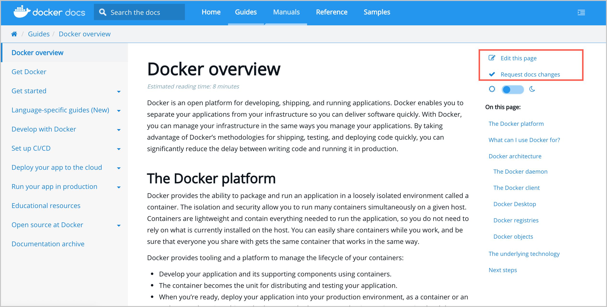

Docs @ Docker
Welcome to the Docker Documentation repository. This is the source for https://docs.docker.com/.
Feel free to send us pull requests and file issues. Our docs are completely open source and we deeply appreciate contributions from the Docker community!
Provide feedback
We’d love to hear your feedback. Please file documentation issues only in the docs GitHub repository. You can file a new issue to suggest improvements or if you see any errors in the existing documentation.
Before submitting a new issue, check whether the issue has already been reported. You can join the discussion using an emoji, or by adding a comment to an existing issue. If possible, we recommend that you suggest a fix to the issue by creating a pull request.
You can ask general questions and get community support through the Docker Community Slack. Personalized support is available through the Docker Pro, Team, and Business subscriptions. See Docker Pricing for details.
If you have an idea for a new feature or behavior change in a specific aspect of Docker, or have found a product bug, file that issue in the project's code repository.
We've made it really easy for you to file new issues.
- Click New issue on the docs repository and fill in the details, or
- Click Request docs changes in the right column of every page on docs.docker.com and add the details.

Contribute to Docker docs
We value your contribution. We'd like to make it as easy as possible to submit
your contributions to the Docker docs repository. Changes to the docs are
handled through pull requests against the master branch. To learn how to
contribute, see CONTRIBUTING.md.
Copyright and license
Copyright 2013-2022 Docker, inc, released under the Apache 2.0 license.